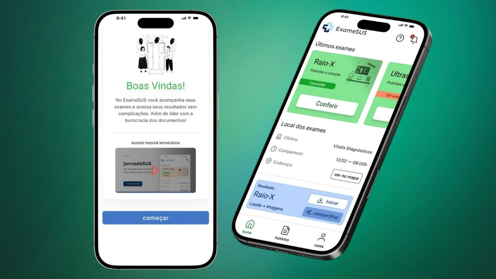
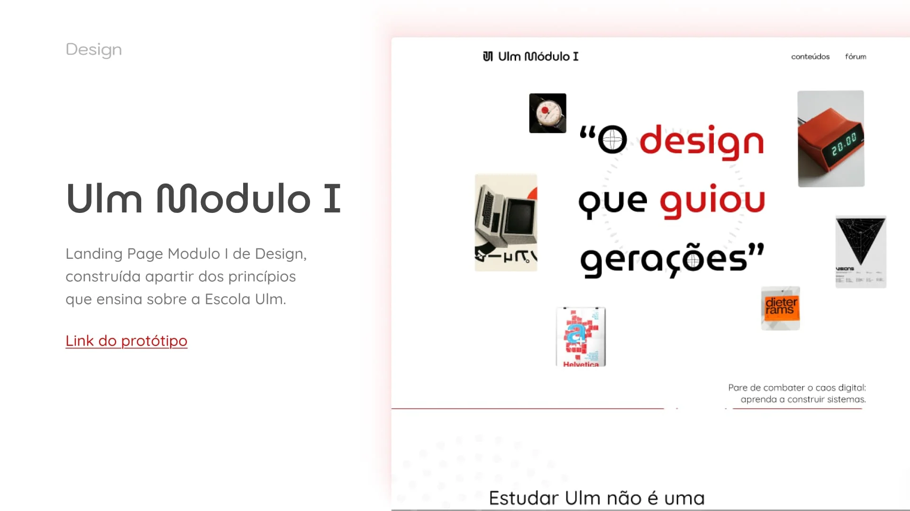

ExameSUS
Aplicativo para desburocratizar atendimentos no SUS. Redução de burocracia e aumento de eficiência estimado em 122% no acompanhamento de exames públicos.
Ler Case de Estudo
Sou Atila, um designer de 17 anos natural de Betim-MG, movido pela curiosidade e pela busca constante por eficiência. Minha jornada começou na ciência e na biologia, mas encontrei na tecnologia o cenário perfeito para explorar a liberdade criativa e analítica, muito inspirado pela trajetória do meu irmão.
Quando não estou projetando interfaces, divido meu foco entre a disciplina física da calistenia e musculação, a música e a sabedoria das filosofias orientais. Sou aficionado pela liberdade e valorizo imensamente o processo de aprendizado contínuo em cada detalhe da vida.
Cursando o 3º ano do Ensino Médio, com formação complementar em UI/UX Design e Processos Administrativos. Reconhecido como Aluno Destaque por 5 anos consecutivos e líder de turma.
Experiência prática na criação de interfaces digitais, com foco em landing pages e comunicação visual forte. Abordagem analítica e orientada a resultados, equilibrada com um olhar cuidadoso para os processos e para cada pequena descoberta ao longo do projeto.

Aplicativo para desburocratizar atendimentos no SUS. Redução de burocracia e aumento de eficiência estimado em 122% no acompanhamento de exames públicos.
Ler Case de Estudo
Case de estudo em desenvolvimento. Em breve, a documentação completa do processo de design estará disponível aqui.
Em breve